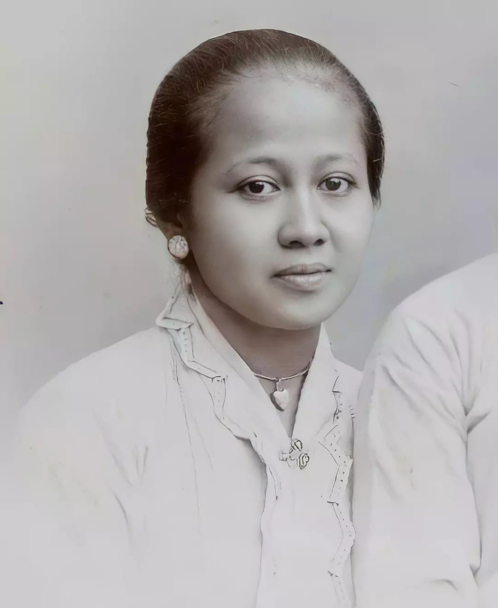
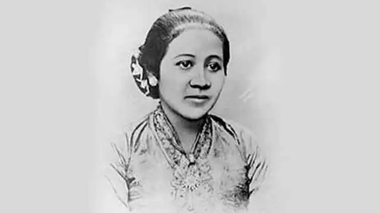
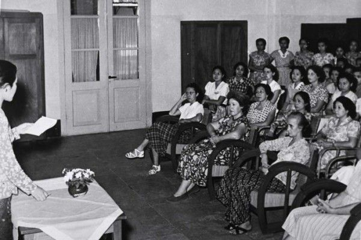
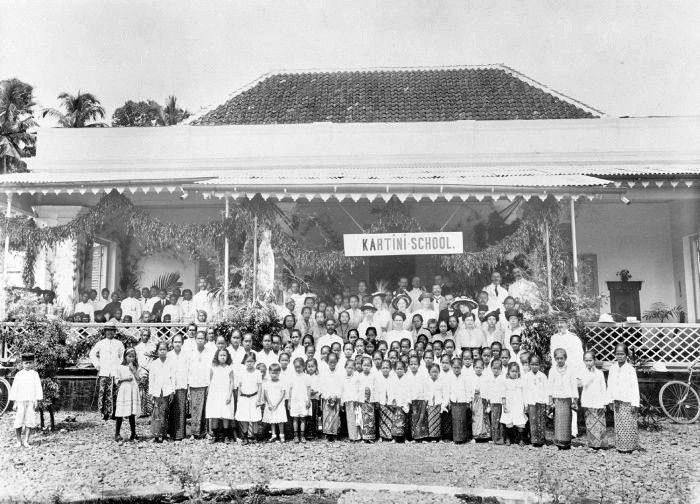
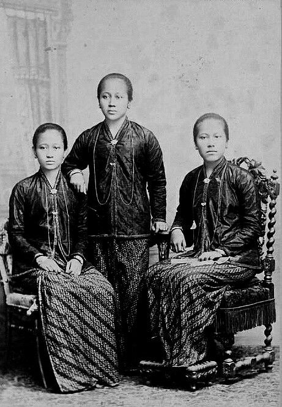
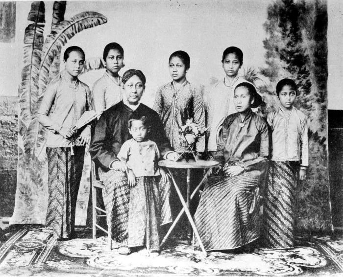
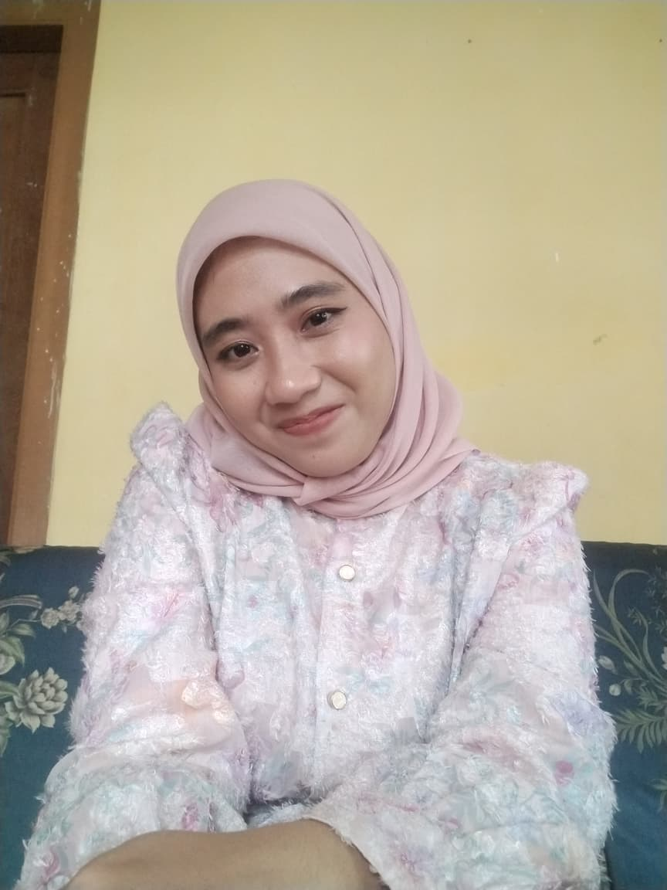

Halaman Utama: Selamat datang di Museum Digital R.A. Kartini (21 April 1879 – 17 September 1904). Sebagai pahlawan nasional Indonesia, Kartini memperjuangkan hak pendidikan dan kesetaraan bagi perempuan. Website ini menyajikan 10 halaman informatif tentang perjuangan, karya, serta warisan abadi beliau. Mari kita teladani jiwa progresif Kartini!
Jepara, 21 April 1879. Putri dari Bupati Jepara Raden Mas Sosroningrat dan M.A. Ngasirah.
Masuk ELS (Europese Lagere School) hingga usia 12 tahun, belajar bahasa Belanda, cikal bakal wawasan luas.
1903 menikah dengan Bupati Rembang K.R.M. Adipati Ario Singgih Djojo Adhiningrat, namun tetap memperjuangkan sekolah wanita.
17 September 1904 (usia 25) usai melahirkan putra pertama. Dikenang sebagai pahlawan kemerdekaan dan emansipasi wanita.
Kartini dikenal karena surat-suratnya yang tajam mengkritik tradisi feodal dan diskriminasi gender. Pemikirannya menginspirasi berdirinya sekolah Kartini di berbagai kota.

Kartini berjuang melawan kultur pingitan dan ketidakadilan pendidikan bagi perempuan. Lewat surat-suratnya pada sahabat di Belanda (Mr. J.H. Abendanon), ia mengkritik kolonial serta mengusulkan sekolah bagi gadis pribumi. Perjuangan Kartini bukan lewat kekerasan namun melalui literasi, diskusi, dan keteladanan. Berkat kegigihannya, Yayasan Kartini mendirikan Sekolah Wanita pertama di Semarang, Surabaya, dan Jakarta.
Kumpulan surat Kartini yang diterbitkan Abendanon (1911), menggambarkan gelap menuju terang. Menjadi inspirasi pergerakan nasional.
Lebih dari 100 surat yang sarat kritik sosial, mimpi memajukan perempuan bumiputera, serta cita-cita persamaan derajat.
Menjadi rujukan gerakan feminisme di Hindia Belanda, dicetak ulang dalam berbagai bahasa, menginspirasi dunia.
Buku "Habis Gelap Terbitlah Terang" telah diterjemahkan ke berbagai bahasa hingga kini menjadi literatur wajib tentang perjuangan hak asasi manusia, terutama hak pendidikan perempuan.

Ide Kartini diwujudkan oleh Yayasan Kartini pasca wafatnya. Pada 1912, didirikan "Kartini Scholen" pertama di Semarang, lalu menyusul di Surabaya, Yogyakarta, Malang, Madiun, dan Cirebon. Sekolah ini mengajarkan membaca, menulis, merawat anak, dan kewanitaan modern. Kini, semangat Kartini hadir melalui ribuan sekolah yang memberikan akses setara bagi perempuan di Indonesia.
21 April diperingati sebagai Hari Kartini, simbol kebangkitan peran perempuan dalam pembangunan.
Landasan gerakan feminis di Indonesia, mendorong partisipasi politik, ekonomi, dan pendidikan tanpa diskriminasi.
Museum Kartini di Jepara dan Rembang, serta patung Kartini di berbagai kota menjadi penanda sejarah.


Foto-foto di atas menggambarkan perjalanan hidup Kartini, dari masa muda hingga bersama keluarga. Meski singkat, jejaknya abadi.
Kata-kata Kartini dari surat-suratnya tetap relevan dan mampu membakar semangat kemajuan perempuan di mana pun. Jadikan inspirasi dalam keseharian!

NIM: 202422004
Nama: Suci Indah Lestari
Jl. Manis Rt 05 Rw 02, Desa KarangMuncang, Kec. CigandaMekar, Kab. Kuninngan, Jawa Barat, Indonesia
Email: indahlestaris831@gmail.com
Telepon: +62 857-7763-8365